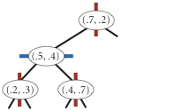
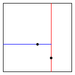

| COS 226 Kd-Trees |
Programming Assignment checklist |
Create a symbol-table data type whose keys are two-dimensional points. Use a 2d-tree to support efficient range search (find all of the points contained in a query rectangle) and nearest-neighbor search (find a closest point to a query point). 2d-trees have numerous applications, ranging from classifying astronomical objects and computer animation to speeding up neural networks and data mining.
Geometric primitives.
To get started, use the following geometric primitives for points and
axis-aligned rectangles in the plane.

algs4.jar) represents points in the plane.
Here is the subset of its API that you may use:
public class Point2D implements Comparable<Point2D> {
public Point2D(double x, double y) // construct the point (x, y)
public double x() // x-coordinate
public double y() // y-coordinate
public double distanceSquaredTo(Point2D that) // square of Euclidean distance between two points
public int compareTo(Point2D that) // for use in an ordered symbol table
public boolean equals(Object that) // does this point equal that object?
public String toString() // string representation
}
algs4.jar) represents axis-aligned rectanges.
Here is the subset of its API that you may use:
public class RectHV {
public RectHV(double xmin, double ymin, // construct the rectangle [xmin, xmax] x [ymin, ymax]
double xmax, double ymax)
public double xmin() // minimum x-coordinate of rectangle
public double ymin() // minimum y-coordinate of rectangle
public double xmax() // maximum x-coordinate of rectangle
public double ymax() // maximum y-coordinate of rectangle
public boolean contains(Point2D p) // does this rectangle contain the point p (either inside or on boundary)?
public boolean intersects(RectHV that) // does this rectangle intersect that rectangle (at one or more points)?
public double distanceSquaredTo(Point2D p) // square of Euclidean distance from point p to closest point in rectangle
public boolean equals(Object that) // does this rectangle equal that object?
public String toString() // string representation
}
Brute-force implementation.
Write a mutable data type PointST.java that represents a symbol table whose
keys are two-dimensional points, by implementing the following API:
public class PointST<Value> {
public PointST() // construct an empty symbol table of points
public boolean isEmpty() // is the symbol table empty?
public int size() // number of points
public void put(Point2D p, Value val) // associate the value val with point p
public Value get(Point2D p) // value associated with point p
public boolean contains(Point2D p) // does the symbol table contain point p?
public Iterable<Point2D> points() // all points in the symbol table
public Iterable<Point2D> range(RectHV rect) // all points that are inside the rectangle (or on the boundary)
public Point2D nearest(Point2D p) // a nearest neighbor of point p; null if the symbol table is empty
public static void main(String[] args) // unit testing (required)
}
Implementation requirements.
You must use either
RedBlackBST or
java.util.TreeMap;
do not implement your own red–black BST.
Corner cases.
Throw a java.lang.IllegalArgumentException if any argument is null.
Unit testing.
Your main() method must call each public constructor and method directly and
help verify that they work as prescribed (e.g., by printing results to standard output).
Performance requirements.
In the worst case, your implementation must support size() in constant time;
put(), get() and contains() in time proportional log n;
and
points(), nearest(), and range() in time proportional to n,
where n is the number of points in the symbol table.
2d-tree implementation.
Write a mutable data type KdTreeST.java that uses a 2d-tree to
implement the same API (but renaming PointST to KdTreeST).
A 2d-tree is a generalization of a BST to two-dimensional keys.
The idea is to build a BST with points in the nodes,
using the x- and y-coordinates of the points
as keys in strictly alternating sequence, starting with the x-coordinates.
insert (0.7, 0.2) 
insert (0.5, 0.4) 
insert (0.2, 0.3)  insert (0.4, 0.7) insert (0.9, 0.6) 
points() method must return the points in level order:
first the root, then all children of the root (from left/bottom to right/top),
then all grandchildren of the root (from left to right), and so forth.
The level-order traversal of the above 2d-tree is
(0.7, 0.2), (0.5, 0.4), (0.9, 0.6), (0.2, 0.3), (0.4, 0.7).
This method is mostly useful to assist you (when debugging) and
us (when grading).
The prime advantage of a 2d-tree over a BST is that it supports efficient implementation of range search and nearest-neighbor search. Each node corresponds to an axis-aligned rectangle, which encloses all of the points in its subtree. The root corresponds to the entire plane [(−∞, −∞), (+∞, +∞ )]; the left and right children of the root correspond to the two rectangles split by the x-coordinate of the point at the root; and so forth.
Clients. You may use the following two interactive client programs to test and debug your code.
Analysis of running time. Analyze the effectiveness of your approach to this problem by estimating how many many nearest-neighbor searches per second that each of your two implementations can perform for input100K.txt (100,000 points) and input1M.txt (1 million points), where the query points are uniformly random points in the unit square. (Count only the time for the nearest-neighbor searches, not the time to read and insert the points.)
Challenge for the bored. Add the following method
to KdTreeST.java:
This method returns the k points that are closest to the query point (in any order); return all n points in the data structure if n ≤ k. It must do this in an efficient manner, i.e. using the technique from kd-tree nearest neighbor search, not from brute force. Once you’ve completed this class, you’ll be able to run BoidSimulator.java (which depends upon both Boid.java and Hawk.java). Behold their flocking majesty.public Iterable<Point2D> nearest(Point2D p, int k)
Submission.
Submit only PointST.java and KdTreeST.java.
We will supply algs4.jar.
Your may not call library functions except those in
those in java.lang, java.util, and algs4.jar.
Finally, submit a
readme.txt file and answer the questions.
This assignment was developed by Kevin Wayne, with boid simulation by Josh Hug.